نظرة أعمق إلى بنية هالات CDM: الترابطات بين معاملات الهالات المستخلصة من ملاءمات آيناستو
الملخص
استخدمنا محاكيات كونية عالية الدقة للمادة المظلمة فقط من أجل دراسة الخواص البنيوية لهالات نموذج لامبدا للمادة المظلمة الباردة (CDM) عبر الزمن الكوني. تمتد الهالات في دراستنا في الكتلة من إلى ، وهي ممثلة بعدد جسيمات يتراوح بين و. نلائم المقاطع الكثافية المتوسطة كروياً لهالات المادة المظلمة بدالة آيناستو ذات المعاملات الثلاثة. وبالنسبة إلى عينة الهالات لدينا، فإن معامل الشكل في آيناستو، ، غير مترابط مع التركيز، ، عند كتلة هالة ثابتة، وفي جميع الانزياحات الحمراء. وتعود التقارير السابقة عن وجود ترابط عكسي إلى انحلالات في الملاءمة، تكون ملاءماتنا أقل حساسية لها بفضل الدقة المكانية الأعلى. غير أن تطور و في الهالات المنفردة يكون مترابطاً عكسياً: فعند الانزياح الأحمر ، تكون وتنخفض مع الزمن، في حين تكون وتزداد مع الزمن. ويعود التطور في البنية أساساً إلى تراكم الكتلة عند أنصاف أقطار أكبر. نقترح أن يتتبع الحالة التطورية للهالة؛ إذ تمتلك الهالات الفتية ديناميكياً قيماً عالية من (أقرب إلى قبعة علوية: )، بينما تمتلك الهالات المسترخية ديناميكياً قيماً منخفضة من (أقرب إلى متساوية الحرارة: ). وهذا الاعتماد التطوري يوفق بين ازدياد مقابل ارتفاع القمة، ، وبين الاعتماد على ميل طيف القدرة لتقلبات الكثافة الابتدائية الذي وجدته دراسات سابقة.
keywords:
علم الكون: النظرية – المادة المظلمة – المجرات: التشكل – المجرات: البنية – الطرائق: عددية1 مقدمة
إن التنبؤ الدقيق بالخواص البنيوية لهالات المادة المظلمة الباردة (CDM) هو أحد الأهداف الأساسية لعلم الكون الحديث. ويمكن استخدام هذه التنبؤات لاختبار نموذج CDM باستعمال منحنيات الدوران (مثلاً Moore, 1994; de Blok et al., 2008)، وكمدخلات في نماذج تشكل المجرات التحليلية وشبه التحليلية (مثلاً Dutton et al., 2007; Dutton & van den Bosch, 2009). ونظراً للطبيعة غير الخطية للمسألة، فإن النهج القياسي هو الحساب المباشر، بدءاً من تقلبات الكثافة البدئية، ثم تطوير النظام تحت تأثير الجاذبية.
وجدت المحاكيات المبكرة نتوءاً مركزياً ذا مقطع كثافي (Dubinski & Carlberg, 1991). وهذا يشبه مقطع هرنكويست (Hernquist, 1990) المستخدم عادةً في نمذجة التوزيع النجمي في المجرات الإهليلجية. وعند أنصاف الأقطار الكبيرة تكون هالات المادة المظلمة أكثر امتداداً، وتوصف على نحو أفضل بمقطع NFW ذي المعاملين، بميل داخلي وميل خارجي (Navarro et al., 1996, 1997). ومن المعلمات الشائعة استخدام كتلة الهالة، ، ومعامل التركيز، ، وهو النسبة بين نصف القطر الفيريالي ونصف قطر المقياس المميز، ولذلك فهو عديم الأبعاد. ويرتبط التركيز والكتلة ارتباطاً قوياً (Bullock et al., 2001; Macciò et al., 2007)، بحيث تعتمد بنية هالات CDM، في المرتبة الأولى، على كتلة الهالة وحدها.
كان اعتماد تركيز الهالة على الكتلة والانزياح الأحمر والمعاملات الكونية موضوع دراسة حاسوبية واسعة. وقد بينت أعمال حديثة أن مقطع آيناستو ذي المعاملات الثلاثة (Einasto, 1965)
| (1) |
يوفر وصفاً أفضل للمقاطع الكثافية في CDM من مقطع NFW (Gao et al., 2008; Dutton & Macciò, 2014; Navarro et al., 2010; Klypin et al., 2016)، أو من مقطع NFW المعمم ذي المعاملات الثلاثة (Klypin et al., 2016).
يتحكم المعامل الزائد نسبةً إلى مقطع NFW، وهو ، في الانحراف عن توزيع متساوي الحرارة (أي ): إذ تقابل مقطعاً متساوي الحرارة، بينما تقابل توزيعاً غاوسياً، وتقابل كرة ذات كثافة منتظمة. ومن ثم فإن الهالات ذات الأكبر تمتلك كتلة أقل عند أنصاف الأقطار الصغيرة والكبيرة مقارنة بالهالات ذات الأصغر.
معامل الشكل دالة متزايدة في كتلة الهالة والانزياح الأحمر. واللافت أن الاعتماد على الانزياح الأحمر يزول كلياً عندما تستبدل كتلة الهالة بارتفاع القمة العديم الأبعاد للهالة (Gao et al., 2008; Prada et al., 2012; Dutton & Macciò, 2014; Klypin et al., 2016). ويعرف ارتفاع القمة هذا، ، بالعلاقة
| (2) |
حيث إن هو عتبة الكثافة الخطية للانهيار عند الانزياح الأحمر ، و هو الجذر التربيعي المتوسط لتقلب الكثافة الخطي عند داخل كرات ذات كتلة متوسطة محصورة، . ويرتبط المعامل بوفرة الأجسام ذات الكتلة عند الانزياح الأحمر . وتعرف الكتلة المميزة لتوزيع كتل الهالات عند الانزياح الأحمر من خلال . وعليه فإن الهالات ذات هالات نموذجية ولها في جميع الانزياحات الحمراء، أما الهالات ذات فهي تقلبات عالية نادرة بمقدار ، ولها .
أوضح Cen (2014) كيف يمكن أن ينشأ مقطع سيرسيك (الذي له الصيغة الدالية نفسها لمقطع آيناستو، لكنه مطبق على كثافة 2D) طبيعياً من حقل عشوائي غاوسي. وبناءً على ذلك، أجرى Nipoti (2015) محاكيات كونية ووجد علاقة بين شكل مقطع كثافة المادة المظلمة ومعامل طيف القدرة لتقلبات الكثافة الابتدائية. فالهالات المتشكلة في كون ذي أطياف مسطحة (مثلاً، ) تكون كتلتها في عدد أقل من التكتلات الأكبر، بينما تمتلك الهالات المتشكلة من أطياف حادة (مثلاً، ) مقداراً أكبر من الكتلة في تكتلات صغيرة. وأدت الأطياف المسطحة إلى قيم أدنى من مقارنة بقيم للأطياف الحادة. وقد أبلغ Ludlow & Angulo (2017) عن نتائج مشابهة نوعياً باستخدام أطياف قدرة ابتدائية على صورة قانون قدرة (إذ تؤدي القيم الأدنى من إلى قيم أعلى من عند ارتفاع قمة ثابت).
وبناءً على هذه الفكرة، ولأن الهالات الأعلى كتلة تتشكل على مقاييس تكون فيها أكبر، فإن المرء يتوقع اسمياً أن تمتلك الهالات ذات الكتل العالية قيماً أدنى قليلاً من . غير أن العكس تماماً هو ما يظهر في المحاكيات الكونية: فالهالات الأعلى كتلة تمتلك قيماً أعلى بكثير من (Gao et al., 2008; Prada et al., 2012; Dutton & Macciò, 2014).
توجد فروق بنيوية بين الهالات ذات الكتل المختلفة: فالهالات الأضخم تكون، في المتوسط، أقل تركيزاً بمقدار دكس لكل عقدة في كتلة الهالة. وإذا كانت الهالات الأقل تركيزاً تمتلك أعلى، فإن ذلك يساعد في تفسير سبب عدم رؤيتنا ينخفض مع ازدياد كتلة الهالة أو ارتفاع القمة. وبالفعل، أبلغت (Ludlow et al., 2013) عن ترابط سلبي: فالهالات المنزاحة نحو أعلى من علاقة التركيز بالكتلة كان لها أدنى، بينما الهالات المنزاحة نحو أدنى كان لها أعلى. ويبدو هذا الترابط متسقاً مع حقيقة أن الهالات الفتية (أي ذات ارتفاعات قمة عالية، ) معروفة بامتلاكها منخفضاً و مرتفعاً (Dutton & Macciò, 2014). وتكمن المسألة في الدقة المنخفضة نسبياً للهالات المحاكاة، ومن ثم في الحساسية لانحلال ملاءمة بين و.
ندرس في هذا البحث بمزيد من التفصيل الترابطات بين معامل شكل آيناستو والتركيز، وتطور هذه المعاملات مع الزمن. ونستخدم محاكيات تكبيرية للحصول على دقة مكانية أعلى بكثير مما يمكن بلوغه في الحجوم الكونية. ونستخدم مجموعتين من المحاكيات: هالات بكتلة مماثلة لكتلة درب التبانة تحتوي على مليون جسيم لكل هالة، ونظائر المادة المظلمة فقط لمجموعة NIHAO التي تحتوي على مليون جسيم لكل هالة.
ينظم هذا البحث على النحو الآتي: في القسم 2 سنلخص بإيجاز خواص المحاكيات، وفي القسم 3 نعرض علاقات القياس، بينما نعرض في القسم 4 تطور الهالة الأضخم في كل محاكاة. وفي القسم 5 نناقش نتائجنا ثم نختم بملخص في القسم 6.
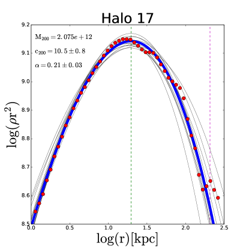
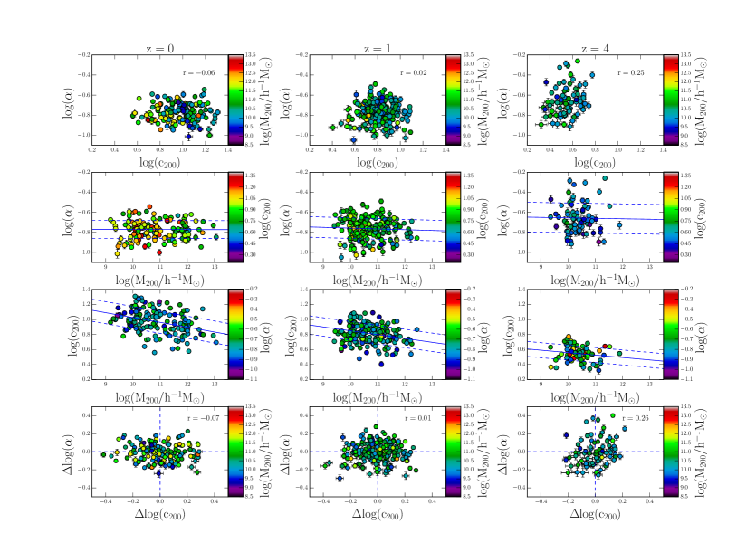
2 المحاكيات
نستخدم أساساً محاكيات من مشروعين. أولهما دراسة Buck et al. (2015, 2016) التي تناولت 21 هالة ذات كتلة حالية ، وثانيهما نظائر المادة المظلمة فقط لدراسة NIHAO (Wang et al., 2015) التي تناولت 91 هالة بكتل حالية من إلى . وتحاكى كل هالة باستخدام تقنية «التكبير»، بحيث توجد هالة رئيسية واحدة في كل محاكاة، إضافة إلى عدة هالات حقلية داخل منطقة التكبير. وتحتوي الهالة الرئيسية على مليون جسيم في NIHAO، و مليون جسيم في عينة Buck وآخرون
جرى تحديد الهالات باستخدام محدد الهالات الهجين MPI+OpenMP AHF11 1 http://popia.ft.uam.es/AMIGA (Gill et al., 2004; Knollmann & Knebe, 2009). يحدد AHF فرط الكثافات المحلية في حقل كثافة مملس تكيفياً بوصفها مراكز هالات محتملة. وتعرف الكتل الفيريالية للهالات بأنها الكتل داخل كرة يكون متوسط كثافتها 200 ضعف كثافة المادة الحرجة الكونية، . ويرمز إلى الكتلة والحجم والسرعة الدائرية الفيريالية لمحاكيات الهيدروديناميك بالرموز: .
قدم Power et al. (2003) عدداً من معايير التقارب لمحاكيات الأجسام N. ولأغراضنا فإن أكثر المتطلبات صرامة هو زمن الاسترخاء (معادلتهم 20). ومن أجل فصل نصف قطر المقياس، يمكن تقريب ذلك بـ (Dutton & Macciò, 2014). ولكي نقيد معامل ، نرغب في فصل مقاييس أصغر بكثير من . لذلك نفرض حداً أدنى لعدد الجسيمات قدره . وبالنسبة إلى هالات Buck وآخرون فإن ذلك يعطي حداً أدنى لكتلة الهالة قدره . ونشترط أن تكون الكسر الكتلي للجسيمات منخفضة الدقة (أي الملوثة) .
من أجل استبعاد الهالات المندمجة (التي تكون معاملاتها البنيوية غير معرفة جيداً)، نقيس معاملين مرتبطين بحالة استرخاء الهالة وفقاً لـ (Macciò et al., 2007)، هما الذي يمثل المسافة بين أكثر الجسيمات ارتباطاً ومركز الكتلة، بوحدات نصف القطر الفيريالي، و الذي يمثل متوسط الانحراف () بين البيانات والملاءمة. وبالنسبة إلى معيار الهالات المسترخية نعتمد و. ونضع كذلك حدوداً على الخطأ في الفضاء اللوغاريتمي لـ و، بحيث تكون و. وفي النهاية، من بين الهالات المختارة أولياً، احتفظنا للتحليل بـ عند الانزياح الأحمر ، و عند ، و و.
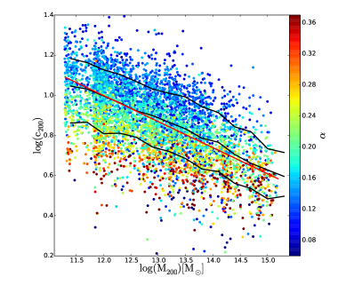
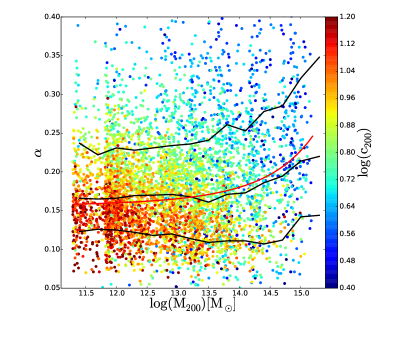
2.1 إجراء الملاءمة
حُسبت المقاطع الكثافية المتوسطة كروياً لجميع الهالات التي تجتاز المرشحات الموصوفة. وفي كل هالة، قسمت المسافة بين 3 أمثال طول التليين و1.5 إلى 50 غلافاً متساوياً في لوغاريتم نصف القطر. وللحصول على المقطع الكثافي، حُسبت المسافة من المركز لكل غلاف بوصفها متوسط نصف قطره الداخلي والخارجي، بينما حُسبت كثافة الغلاف باستخدام كتلة جميع الجسيمات داخل الغلاف وحجمه.
نلائم كل هالة بدالة آيناستو ذات المعاملات الثلاثة (المعادلة 1) التي يحددها معامل الشكل، ، ونصف قطر المقياس، ، والتطبيع، . ونظراً إلى أن ملاءمة دالة آيناستو غير خطية، فإننا نستخدم شيفرة سلاسل ماركوف مونت كارلو (MCMC) المسماة emcee (Foreman-Mackey et al., 2013) من أجل أخذ عينات سليمة من التوزيع البعدي. وتستخلص أفضل معاملات ابتدائية للملاءمة باستخدام حزمة iMinuit. أما المسبقات في emcee فهي منتظمة من 0.1 إلى 10 ضعف أفضل ملاءمة ابتدائية. وتؤخذ قيمة أفضل ملاءمة من emcee بوصفها وسيط التوزيع، مما يوفر ملاءمات أفضل من تلك المحصلة من نتائج iMinuit. وتؤخذ أخطاء معاملات كل ملاءمة لتكون المئين والمئين من التوزيع البعدي للمعامل المعني.
يبين الشكل 1 مثالاً على الملاءمة. فالخط الأزرق هو الملاءمة المحصلة للبيانات، بينما تبين الخطوط الرمادية 12 عينة مأخوذة من السلسلة أثناء إجراء الملاءمة. وتشير الخطوط الخضراء والأرجوانية المتقطعة إلى نصف قطر المقياس، ، ونصف القطر الفيريالي ، على الترتيب. لاحظ أن التركيز يحسب باستخدام نصف القطر الفيريالي من بيانات الجسيمات (لا من المقطع الملائم)، ولذلك فهو مكافئ لنصف قطر المقياس المستمد من الملاءمة، لكنه يمتاز بكونه عديم الأبعاد.
3 علاقات القياس
يبين الشكل 2 العلاقات بين التركيز، ، ومعامل الشكل، ، وكتلة الهالة، ، عند الانزياحات الحمراء و4. وتمتلك علاقة مقابل الكتلة وعلاقة مقابل الكتلة ميولاً وتطبيعات وتطورات منسجمة مع الدراسات السابقة (مثلاً، Dutton & Macciò, 2014).
نختبر وجود ترابط بين و باستخدام رسمين. وتعرض اللوحات العلوية مقارنة مباشرة، بينما تعرض اللوحات السفلية بواقي علاقات مقابل و مقابل . ولا نجد ترابطاً معنوياً بين و بأي من الطريقتين وفي جميع الانزياحات الحمراء (تظهر معاملات الارتباط في الزاوية العليا اليمنى من كل لوحة). وقد تحققنا من أن غياب الترابط هذا يبقى قائماً أيضاً عندما ندرج الهالات غير المسترخية، وعندما نستخدم معايير استرخاء أقل صرامة. وينبغي مقارنة نتيجتنا بالشكل 2 في (Ludlow et al., 2013)، الذي يبين ترابطاً عكسياً قوياً بين و.
ومن أجل إعادة إنتاج نتيجة Ludlow et al. (2013) نستخدم المحاكيات الكونية من Dutton & Macciò (2014). وتغطي هذه المحاكيات مجالاً مماثلاً من كتل الهالات وبدقة مماثلة لتلك المستخدمة في Ludlow et al. (2013). وكما في Ludlow et al. (2013) لا نأخذ إلا الهالات التي تحتوي على جسيم على الأقل. ويبين الشكل 3 علاقاتي مقابل كتلة الهالة (أعلى) و مقابل كتلة الهالة (أسفل) عند الانزياح الأحمر ، مع ترميز لوني بحسب و، على الترتيب. وتظهر هذه الرسوم اتجاهات مشابهة جداً لما أبلغ عنه Ludlow et al. (2013)، أي إن الهالات ذات الأعلى عند كتلة هالة معينة تمتلك في المتوسط أدنى.
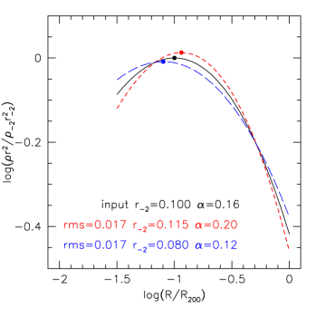
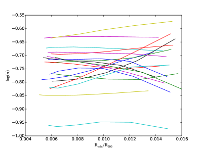
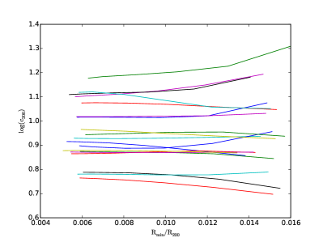
3.1 أثر الدقة في التغاير بين و
إن أحد الفروق المهمة بين الهالات المستخدمة في الشكلين 2 و3 هو عدد الجسيمات. ويرتبط عدد الجسيمات مباشرة بأصغر المقاييس التي تستطيع المحاكاة فصلها (Power et al., 2003). ويتضمن الشكل 3 ودراسة Ludlow et al. (2013) هالات لا يزيد عدد جسيماتها على في بعض الحالات. وبما أن هذه حجوم كونية، فإن العينات تغلب عليها هالات تقع ضمن رتبة مقدار واحدة من الحد. أما متوسط عدد الجسيمات لكل هالة في المحاكيات المستخدمة في الشكل 3 فهو . وتذكر أننا في الشكل 2 لا ندرج إلا الهالات التي تحتوي على جسيم على الأقل.
وبما أن Ludlow et al. (2013) يستخدمون صناديق كونية، فإن الهالات الأقل كتلة تكون ممثلة بدقة أضعف. وفي الشكل 2 لديهم يمكن للمرء أن يرى بوضوح أن التشتت في كل من و أكبر في الهالات الأقل تمثيلاً. ومن خلال مقارنة النتائج عند كتلة هالة M⊙ نرى أن الهالات من أكبر صندوق (ومن ثم الأدنى دقة) تمتلك متوسط أعلى ومتوسط أدنى من الهالات من أصغر صندوق (ومن ثم الأعلى دقة). وهذا يبين ترابطاً عكسياً بين و، يحتمل أن يكون ناجماً عن انحلالات في الملاءمة.
ومن خلال مقارنة مقاطع كثافة آيناستو بقيم مختلفة من وأنصاف أقطار مقياس مختلفة، يسهل إدراك كيف يمكن أن يحدث انحلال في الملاءمة. يبين الشكل 4 مثالاً على ذلك. وقد اخترنا لهذا المثال قيماً نموذجية لنصف قطر المقياس و. وطُبعت المقاطع الثلاثة كلها إلى نصف قطر المقياس للهالة المدخلة. وعندما تزداد (الخط الأحمر) يصبح المقطع أكثر حدة، بينما تؤدي الأصغر (الخط الأزرق) إلى مقطع أكثر تسطحاً. وتزداد الانحرافات كلما ابتعدنا عن نصف قطر المقياس، لذلك، في هالة مفصولة إلى 1% من نصف القطر الفيريالي، تكون الفروق بين قيم واضحة. أما في هالة أقل فصلاً، مثلاً نصف قطر أدنى مقداره 3% من نصف القطر الفيريالي، فيمكن تحسين الملاءمة بتغيير نصف قطر المقياس (والتطبيع الكلي).
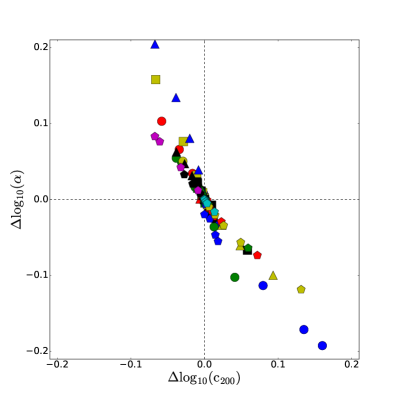
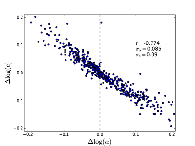
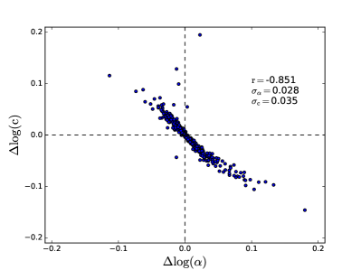
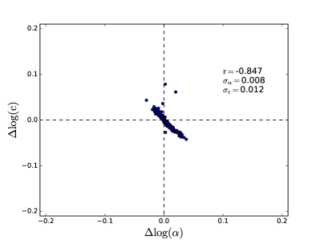
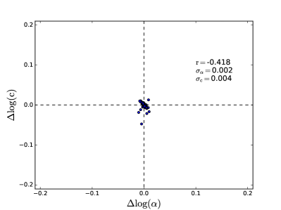
ولدراسة دور الدقة بمزيد من التفصيل أعدنا ملاءمة هالات Buck وآخرون وغيرنا نصف القطر الأدنى للمقطع الكثافي لمحاكاة تأثيرات محاكيات أقل دقة. وفي الشكل 5 نرسم القيم الناتجة لـ و مقابل نصف القطر الأدنى المستخدم في الملاءمة. ونرى أن القيم الملائمة مستقرة إلى حد بعيد من دقة إلى أخرى، لكن توجد إزاحات منهجية، بحيث إن التشتت في و يزداد عند انخفاض الدقة. وفي الشكل 6 نرسم التغير في (نسبةً إلى الملاءمة الأعلى دقة) مقابل التغير في . ويقابل كل لون/رمز هالة مختلفة. ويوجد ترابط عكسي واضح بين و، وهو ما يؤكد ظننا أن انحلالاً في الملاءمة مسؤول عن الترابط العكسي بين و الموجود في الهالات الأقل دقة.
وفي خطوة إضافية ننشئ 1000 مقطع كثافة وهمياً مع تغيير كتلة الهالة من إلى . ونستخدم دالة آيناستو ونسحب المعاملات () من ملاءماتنا عند الانزياح الأحمر . ويؤخذ لكل مقطع عينات من 0.002 إلى 1.0 باستخدام 15 حاوية متساوية التباعد لوغاريتمياً، مع إضافة ضجيج إلى المقطع الكثافي. ونجري سلسلة من الملاءمات مع إزالة الحاوية الداخلية تباعاً. وفي الشكل 7 نرسم الخطأ في مقابل الخطأ في لجميع النماذج الوهمية البالغ عددها 1000. وتقابل كل لوحة قيمة مختلفة من . ونربط الحاوية الأعمق بعدد الجسيمات داخل نصف القطر الفيريالي باستخدام معايير التقارب لدى Power et al. (2003):
| (3) |
وبإعطاء ومقطع كتلة ، نحل لإيجاد عدد الجسيمات داخل نصف القطر الفيريالي.
بالنسبة إلى مليون (أسفل اليسار)، يكون الخطأ في و صغيراً . ومع الهالات الأضعف فصلاً تزداد الأخطاء في و الملائمين إلى من أجل (أعلى اليمين) و من أجل (أعلى اليسار). لكن الأهم أن هناك ترابطاً عكسياً واضحاً بين و من أجل . وبالنسبة إلى النتائج في الشكل 2 نستخدم ما لا يقل عن جسيم، ولدينا عادةً جسيم، ومن ثم لا نتوقع انحلالات ملاءمة معنوية بين و.
وخلاصة ذلك أننا بينا، باستخدام مقاطع كثافة وهمية وإعادة أخذ عينات من مقاطعنا الكثافية المحاكاة، أن الهالات الأضعف فصلاً تعاني انحلالاً بين و الملائمين. وهذا يوفق بين نتيجتنا التي لا تجد ترابطاً بين و (عند كتلة هالة ثابتة) والمحصلة باستخدام مليون جسيم لكل هالة، وبين الترابط القوي (عند كتلة هالة ثابتة) الذي وجده Ludlow et al. (2013) باستخدام جسيم لكل هالة. وبما أن هناك ترابطاً قوياً بين وتاريخ تراكم الكتلة، فقد يميل المرء إلى استنتاج أن نتائجنا تعني عدم وجود ترابط بين وتاريخ تراكم الكتلة، ومن ثم تناقض النتيجة التي وجدها Ludlow et al. (2013). غير أن الترابط الذي أبلغ عنه Ludlow et al. (2013) ضعيف، كما أن هناك تشتتاً في العلاقة بين وتاريخ تراكم الكتلة. فإذا كان هذا التشتت يعتمد على ، فإنه قد يوفق بين نتائجنا المتعارضة ظاهرياً.
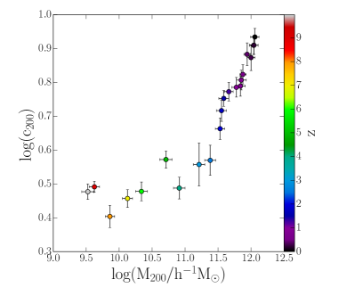
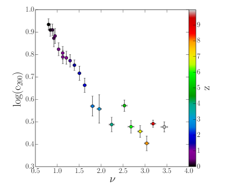
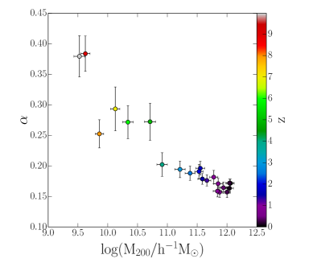
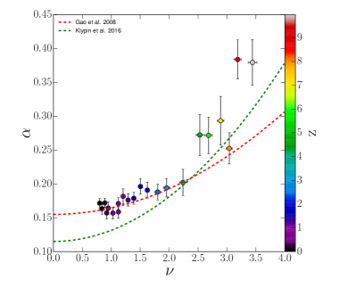
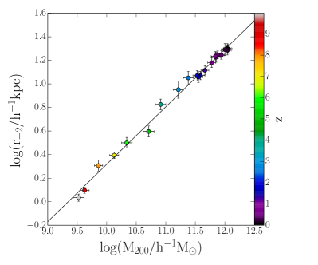
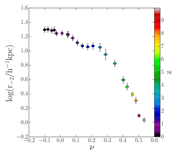
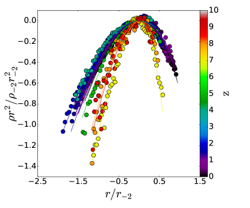
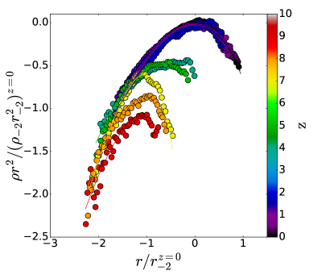
4 تطور الأسلاف الأضخم كتلة
لقد بينا أنه لا يوجد ترابط معنوي بين و عند انزياح أحمر معين لعينة من الهالات المفصولة جيداً. وندرس الآن تطور أكثر الأسلاف كتلة (ومن ثم الهالات المفصولة جيداً) في عينة Buck وآخرون . وعند كل انزياح أحمر لدينا عينة تضم نحو 20 هالة. ومن أجل استكشاف كتل هالات أدنى من وانزياح أحمر ، نرخي المعايير لنشمل هالات تحتوي على جسيم على الأقل. لذلك ستكون الملاءمات عند أعلى الانزياحات الحمراء أقل موثوقية على مستوى كل هالة منفردة منها عند الانزياحات الحمراء الأدنى، ومع ذلك تواصل الهالات الأضعف فصلاً الاتجاهات التي تحددها الهالات الأفضل فصلاً. وعند كل انزياح أحمر نحسب وسيط التركيز ومعامل الشكل وكتلة الهالة. وتبين اللوحات اليسرى في الشكل 8 تطور علاقات مقابل الكتلة، و مقابل الكتلة، و مقابل الكتلة.
في الأزمنة المبكرة () تمتلك الهالات تركيزاً منخفضاً، ، وأنصاف أقطار مقياس صغيرة، kpc، ومعامل شكل عالياً . ومع نمو الهالة في الكتلة يزداد نصف قطر المقياس والتركيز بينما ينخفض معامل الشكل بسلاسة نسبية. ومن ثم، فبالنسبة إلى السلف الأضخم لهالة معينة، يكون تطور و مترابطاً عكسياً. ومن المثير للاهتمام وجود علاقة قانون قدرة بين نصف قطر المقياس وكتلة الهالة بميل يقارب :
| (4) |
في اللوحات اليمنى نستبدل كتلة الهالة بمعامل ارتفاع القمة العديم الأبعاد، (انظر المعادلة 2). ويزداد ارتفاع قمة الهالة الأضخم كلما عدنا في الزمن، ولذلك تكاد الرسوم ذات تكون انعكاساً مرآتياً للرسوم ذات الكتلة. وتبين اللوحة الوسطى الترابط المعروف جيداً بين و. وتبين الخطوط المتقطعة والمنقطة صيغة ملاءمة من Gao et al. (2008) وKlypin et al. (2016)، على الترتيب، وتتفق محاكياتنا معها على نحو عام.
كيف يتطور المقطع الكثافي للهالات؟ يقابل نصف قطر المقياس قمة رسم مقابل نصف القطر، بينما يكون معامل الشكل حساساً للمقطع الكثافي عند أنصاف أقطار أكبر وأصغر من . وفي الشكل 9 نعرض تطور المقطع الكثافي لهالة منفردة. وتبين اللوحة اليسرى مقاطع طُبعت إلى نصف قطر المقياس وكثافة المقياس عند كل انزياح أحمر. ونرى بوضوح أن الهالات عند الانزياحات الحمراء الأعلى تمتلك مقاطع كثافية أكثر تركيزاً ( أعلى) حول نصف قطر المقياس. وبالنسبة إلى نصف قطر المقياس، تضاف الكتلة مع الزمن عند كل من أنصاف الأقطار الصغيرة والكبيرة. وفي اللوحة اليمنى طُبعت المقاطع إلى نصف قطر المقياس والكثافة عند الانزياح الأحمر . ويبين ذلك أنه بعد النمو الابتدائي عند ، يعود التطور أساساً إلى إضافة الكتلة عند أنصاف أقطار فيزيائية كبيرة. وبحلول يكون المقطع الكثافي قد أصبح إلى حد كبير مستقراً في موضعه، وبينما ينمو نصف القطر الفيريالي بفعل التطور الزائف لكثافة الخلفية، يبدو أن و يواصلان التطور.
5 مناقشة
كما نوقش في المقدمة، فقد اقتُرح أن ميل طيف القدرة لتقلبات الكثافة يحدد معامل آيناستو (Cen, 2014; Nipoti, 2015; Ludlow & Angulo, 2017). ولو كان هذا هو التفسير الوحيد، لتوقعنا أن تمتلك الهالات الأعلى كتلة وذات قيماً أدنى من في محاكيات CDM. وحقيقة أن العكس هو المرصود تعني أنه لا بد من وجود تفسير آخر.
نجد في محاكياتنا أن أكثر الأسلاف كتلة لهالات بكتلة درب التبانة تمتلك عالياً، ينخفض لاحقاً مع ازدياد الزمن. ويذكر ذلك بعملية الاسترخاء العنيف (Lynden-Bell, 1967) في الاندماجات الكبرى غير التبددية، التي تميل إلى خفض نحو قيمة متساوية الحرارة، لكنها لا تبلغها (). ومن ثم نخمن أن الحالة التطورية للهالة هي التي تحدد .
وتعود الصلة بميل طيف القدرة إلى أن الاندماجات الكبرى، خلال مقدار معين من الزمن، يكون لها أثر استرخاء أكبر بكثير من مجموع مكافئ من الاندماجات الصغرى (Hilz et al., 2012). ويرتبط هذا بحقيقة أن مقياس زمن الاحتكاك الديناميكي، ، حيث إن هو نسبة الكتلة، يكون أقصر في الاندماجات الكبرى. لذلك ستشهد الهالات المتشكلة من أطياف مسطحة مزيداً من الاندماجات الكبرى، ومن المتوقع أن تكون أكثر تطوراً ديناميكياً من هالات لها الكتلة نفسها لكنها تتشكل من أطياف حادة عبر اندماجات صغرى.
نتوقع أن اتجاه تطور نحو الانخفاض صحيح أيضاً للهالات الأعلى والأدنى كتلة (لأن علاقة مقابل تبدو مستقلة عن الانزياح الأحمر). ومع ذلك، سيكون من المفيد التحقق من ذلك بمحاكيات عالية الدقة.
6 ملخص
نستخدم محاكيات تكبيرية عالية الدقة للأجسام N (حتى 10 مليون جسيم لكل هالة) لدراسة بنية هالات المادة المظلمة من كتل المجرات القزمة إلى كتلة درب التبانة عبر الزمن الكوني. ونلائم هالاتنا بدالة آيناستو ذات المعاملات الثلاثة، المحددة بكتلة الهالة وتركيزها، ، وشكل المقطع، . ونلخص نتائجنا على النحو الآتي:
-
•
عند انزياح أحمر معين، يكون مستقلاً عن (الشكل 2). وهذا يعني أن ثلاثة معاملات (على الأقل) لازمة لوصف بنية هالات CDM بدقة.
- •
-
•
غير أن تطور و، بالنسبة إلى أكثر الأسلاف كتلة للهالات المنفردة، يكون مترابطاً عكسياً (الشكل 8). فعند الانزياح الأحمر العالي () تكون و. ومع تطور الهالة تنخفض بينما تزداد .
-
•
يرجع ازدياد التركيز إلى ازدياد نصف القطر الفيريالي، وهو ازدياد يعوض بأكثر مما يكفي عن ازدياد نصف قطر المقياس، ، مع الزمن (الشكل 8).
-
•
يرجع تطور بنية الهالة ( و) أساساً إلى تراكم الكتلة عند أنصاف أقطار كبيرة (الشكل 9).
نخمن أن تطور مرتبط بحالة استرخاء الهالة. فالهالات الأحدث والأقل استرخاءً ديناميكياً تمتلك أعلى أقرب إلى قبعة علوية كروية، بينما تمتلك الهالات الأقدم والأكثر استرخاءً ديناميكياً أدنى أقرب إلى توزيع متساوي الحرارة. وسيكون تحليل ديناميكيات جسيمات الهالة طريقة للتحقق من ذلك.
الشكر والتقدير
نشكر الحكم المجهول الذي ساعدت تعليقاته على تحسين وضوح البحث. أُجري هذا البحث على موارد الحوسبة عالية الأداء في جامعة نيويورك أبوظبي؛ وعلى عنقود theo في معهد ماكس بلانك للفلك، وعلى عناقيد hydra في مركز الحوسبة في غارشينغ. ونقدر كثيراً إسهامات جميع هذه المخصصات الحاسوبية.
References
- Buck et al. (2015) Buck, T., Macciò, A. V., & Dutton, A. A. 2015, ApJ, 809, 49
- Buck et al. (2016) Buck, T., Dutton, A. A., & Macciò, A. V. 2016, MNRAS, 460, 4348
- Bullock et al. (2001) Bullock, J. S., Kolatt, T. S., Sigad, Y., et al. 2001, MNRAS, 321, 559
- Cen (2014) Cen, R. 2014, ApJ, 790, L24
- de Blok et al. (2008) de Blok, W. J. G., Walter, F., Brinks, E., et al. 2008, AJ, 136, 2648-2719
- Dubinski & Carlberg (1991) Dubinski, J., & Carlberg, R. G. 1991, ApJ, 378, 496
- Dutton et al. (2007) Dutton, A. A., van den Bosch, F. C., Dekel, A., & Courteau, S. 2007, ApJ, 654, 27
- Dutton & van den Bosch (2009) Dutton, A. A., & van den Bosch, F. C. 2009, MNRAS, 396, 141
- Dutton & Macciò (2014) Dutton, A. A., & Macciò, A. V. 2014, MNRAS, 441, 3359
- Einasto (1965) Einasto, J. 1965, Trudy Astrofizicheskogo Instituta Alma-Ata, 5, 87
- Foreman-Mackey et al. (2013) Foreman-Mackey, D., Hogg, D. W., Lang, D., & Goodman, J. 2013, PASP, 125, 306
- Gao et al. (2008) Gao, L., Navarro, J. F., Cole, S., et al. 2008, MNRAS, 387, 536
- Gill et al. (2004) Gill, S. P. D., Knebe, A., & Gibson, B. K. 2004, MNRAS, 351, 399
- Hernquist (1990) Hernquist, L. 1990, ApJ, 356, 359
- Hilz et al. (2012) Hilz, M., Naab, T., Ostriker, J. P., et al. 2012, MNRAS, 425, 3119
- Klypin et al. (2016) Klypin, A., Yepes, G., Gottlöber, S., Prada, F., & Heß, S. 2016, MNRAS, 457, 4340
- Knollmann & Knebe (2009) Knollmann, S. R., & Knebe, A. 2009, ApJS, 182, 608
- Lynden-Bell (1967) Lynden-Bell, D. 1967, MNRAS, 136, 101
- Ludlow et al. (2013) Ludlow, A. D., Navarro, J. F., Boylan-Kolchin, M., et al. 2013, MNRAS, 432, 1103
- Ludlow & Angulo (2017) Ludlow, A. D., & Angulo, R. E. 2017, MNRAS, 465, L84
- Macciò et al. (2007) Macciò, A. V., Dutton, A. A., van den Bosch, F. C., et al. 2007, MNRAS, 378, 55
- Moore (1994) Moore, B. 1994, Nature, 370, 629
- Muñoz-Cuartas et al. (2011) Muñoz-Cuartas, J. C., Macciò, A. V., Gottlöber, S., & Dutton, A. A. 2011, MNRAS, 411, 584
- Navarro et al. (1996) Navarro, J. F., Frenk, C. S., & White, S. D. M. 1996, ApJ, 462, 563
- Navarro et al. (1997) Navarro, J. F., Frenk, C. S., & White, S. D. M. 1997, ApJ, 490, 493
- Navarro et al. (2010) Navarro, J. F., Ludlow, A., Springel, V., et al. 2010, MNRAS, 402, 21
- Nipoti (2015) Nipoti, C. 2015, ApJ, 805, L16
- Power et al. (2003) Power, C., Navarro, J. F., Jenkins, A., et al. 2003, MNRAS, 338, 14
- Prada et al. (2012) Prada, F., Klypin, A. A., Cuesta, A. J., Betancort-Rijo, J. E., & Primack, J. 2012, MNRAS, 423, 3018
- Wang et al. (2015) Wang, L., Dutton, A. A., Stinson, G. S., et al. 2015, MNRAS, 454, 83